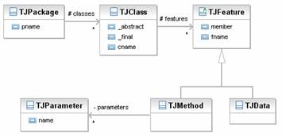
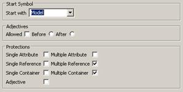

Requirements: you have to install the plugin fr.uha.mips.sintaks.ecore2hutn into a sintaks operational eclipse installation. The activation can be seen as a new menu entry in the sintaks menu (left figure below).
As you select the new entry "ecore to sintaks in HUTN", the window on the right figure above is proposed. There are two parameters to control the transformation. The parameter "adjectives is allowed" controls the way to reflect the single value attributes: either as a value before the body or as a key/value pair in the body of an eClass. The "start" parameter selects the start class in the sintaks root rule.
According to the ecore metamodel, several concepts can be found in an ecore file. Many of them (enumeration, datatype, …) are relevant to the value carried by other concepts. Packages are not processed as each class carried itself the owning package. As sintaks relies on the factory generated by EMF, we don’t care about them. So nowadays, we have only to process eClasses.
In fact, two kinds of classes can be found in an ecore description:
· abstract classes
· concrete classes
We assume that an abstract class is an intermediate class in a hierarchy of classes, a concrete class is always a standalone class or a LEAF in a hierarchy.
Warning: this version is not yet able to well process intermediate concrete classes.
Ecore proposes many kinds of slots: in our concrete syntax we take into account only 'real' plain value slots. All derived, transient, not settable slots are automatically removed from the set of available slots. References with an opposite containment are also removed from the set of available slots.
Warning: two opposite references are treated by two different rules (one for each end). This leads to too many descriptions for the same relationship. You have to remove one manually.
We call attribute an ecore attribute. Later we can have single value attribute and multi value attributes.
We call adjective a single value attribute.
We call reference an ecore reference without containment relationship from both ways (normal and opposite).
We call containment an ecore reference with a normal containment relationship.
A fragment is a rule owned by the root concept of a sintaks model.
"xxx" a constant (keyword).
<xxx> a constant (keyword) extracted from the current concept.
text something associated to a slot of the model under construction
* 0 or more
+ 1 or more
? 0 or 1
(xxx) grammar rule grouping
The transformation consists in creating a sintaks template handling the class. Let say that the current class is represented by the name eClass, we can propose the EBNF rules below to describe the produced template.
Template ::= <eClass.name> id ? adjectives ? body "eoln"
id ::= value ?
The id rule means that we try to find an id attribute in the ecore model. If we find one we use it as an "id" for the template else we do not generate the rule.
adjectives ::= "(" eClass.adjective * ")"
The optional adjectives rules states that if the directive isAdjectiveAllowed is not set or the current eClass doesn’t contain adjectives nothing is generated else a list of adjectives enclosed with parenthesis is generated. The order of the list belongs to the order of the ecore attributes.
body ::= "{" "eoln" ( content "eoln" ) + "}"
| ";"
The body rule states that if additional content have to be described, we produce it one per line (to enhance readability), enclosed with curly braces else we just close the class description using a semi colon.
content ::= attribute | reference | container | shared
The content rule is about complex content such as multiple value slots or isAdjectiveAllowed is not set all single value attribute. Unfortunately the order is not so free as stated above but uses a complex ordering not relevant in this document as you can freely change it in the generated file.
shared ::= RULEREF(id)
A shared slot means that we process a slot belonging to a mother (abstract) class and not to the current class. All children should share the same concrete representation. We propose to use a special concept in sintaks which allows calling a fragment known by its unique id (concatenation of the eClass owning the slot, a dot and the slot name). It is now the responsibility of the fragment to handle correctly the shared slot.
attribute ::= singleValueAttribute | multipleValueAttribute
singleValueAttribute ::= <eAttribute.name> '=' value ';'
A single value attribute (not used as id or adjective) are represented by pair name/value separated by an equal sign and terminated by a semicolon.
multipleValueAttribute ::= <eAttribute.name> '=' '[' value ( ',' value ) * ']' ';'
A multiple value attribute is represented by a name and values separated by an equal sign and terminated by a semicolon. All the values are in a comma separated list of single value enclosed by brackets.
reference ::= singleValueReference | multipleValueReference
singleValueReference ::= <eReference.name> '=' OR(key) ';'
| e
A single value Reference is processed by a complex rule. We generate a custom condition to check at runtime if the value is filled or not. If the reference is empty we do nothing else we generate a sequence composed by its name, an equal sign, an ObjectReference indexed by the id attribute of the referenced class and a semicolon to terminate the rule.
multipleValueReference ::= <eReference.name> '=' '[' OR(key) ( ',' OR(key)) * ']' ';'
We use the same pattern as for the multiple value attribute except we replace the value by the OR(key) pattern (same meaning as for the single value reference).
container ::= singleValueContainer | multipleValueContainer
singleValueContainer ::= <eContainer.name> ':' RULEREF(eClass.name)
A case of a single value container, we start by the name of the container followed by the colon sign and end with a ruleref to the rule belonging to the class to handle by the container.
multipleValueContainer ::= <eCont.name> '[' RULEREF(eCont.name) * ']'
| e
A multiple value container is processed by a complex rule. We generate a custom condition to check at runtime if the value is filled or not. If the container is empty we do nothing else we generate a sequence composed by its name and enclosed into brackets, an iteration over the container. The iteration calls a ruleref to the rule belonging to the class.
The transformation consists in creating several fragments.
The most important one is about the abstract class itself. We create an alternative with a collection of polymorphic conditions composed over the list of all concrete subclasses.
For each slot local to the abstract class we create a fragment composed by rules similar as those describes in the concrete class. So they can be shared among sub classes.
We propose the following metamodel :
If we use our transformation tool, we obtain the following concrete syntax.
The figure on the left describes four fragments.
The first fragment is about the Expr abstract class and contains the three polymorphic conditions over the three concrete classes. The BinaryOperator_lhs and BinaryOperator_rhs describe the shared containment lhs and rhs in the abstract BinaryOperator class. They are composed by a "lhs" (rhs) terminal, a colon separator and a ruleref to the expr fragment (the preceding alternative). The last fragment can be safely removed as it is a fragment about an intermediate abstract class and the process proposed does not rely on such intermediate classes.
The figure on the middle describes 3 fragments about concrete classes. The multiplicativeOp template starts by the adequate terminal, opens a curly brace, rulerefs the lhs fragment, the rhs fragment and ends by a curly brace. The NumberInteger template first extracts a terminal followed by its value, the semicolon and ends. The third template (additiveOp) uses the same construction as the multiplicativeOperator.
The figure on the right describes the Model template, the root of an expression model. It starts by the terminal Model and enclosed by curly braces first something about the children containment followed by the child containment. If the children containment is empty nothing is produced else we start by the terminal children followed by the list of children (one per line) enclosed by brackets. One child in the list is described using the Expr fragment. The child containment is just a terminal followed by a colon and a ruleref to the Expr fragment.

In the tinyJava example, we propose the above meta model and we obtain a sintaks model, some excerpts are presented on the figure below.

The TJClass template is really interesting. It starts first by the terminal "TJClass" (later you can change it to class), its name, enclosed by parenthesis the three attributes (later you can reorder them), and ends by the body. The body is just about the features container. We proposes an alternative to skip the description if the container is empty else we have the now common pattern : a terminal and enclosed by brackets an iteration over the container which rulerefs the TJFeature fragment.
The TJFeature is really simple, an alternative over the two concrete classe. Perhaps, the Data and Method templates are quite similar (at the beginning) to better share them we can introduce new constructions, but they are too hard to infer automatically. Of course, java style suggests to put the attributes at the beginning of the rule without the parenthesis, you are left to change the template to have a better way to represent the concepts.